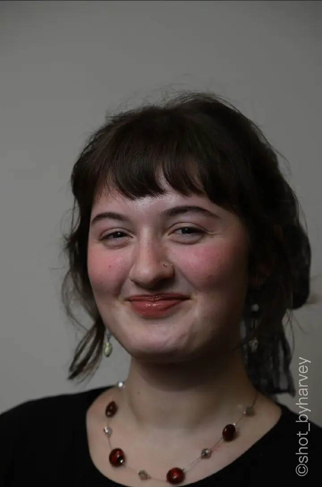
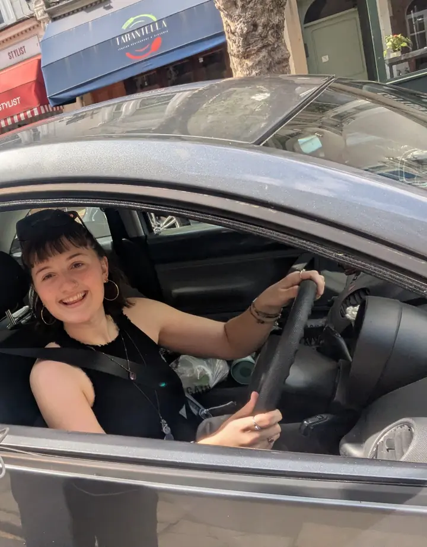
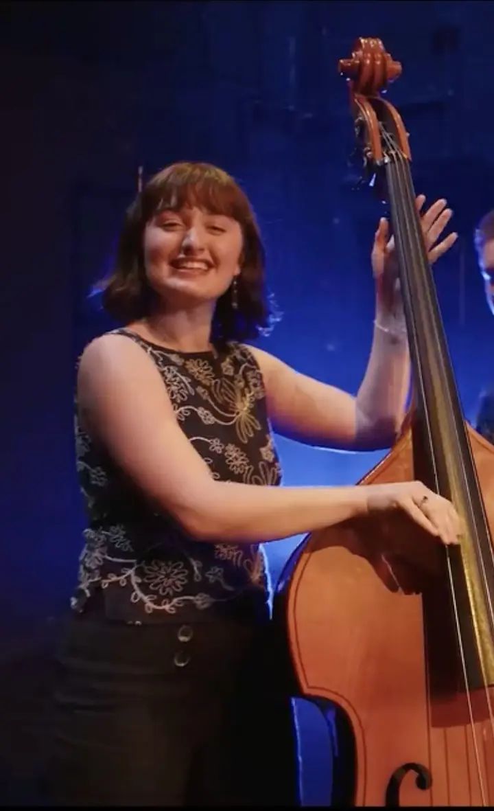
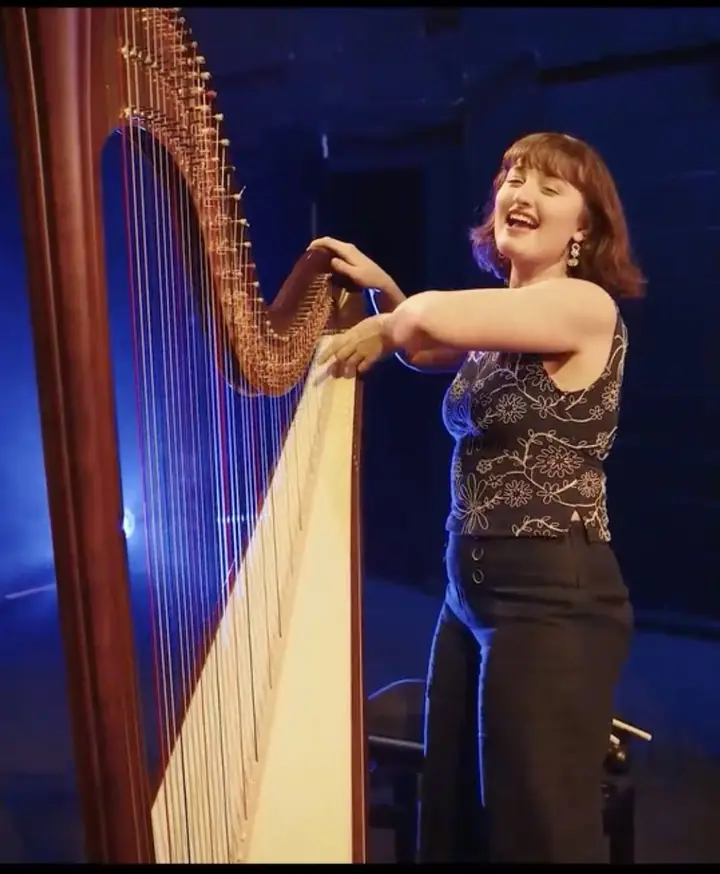
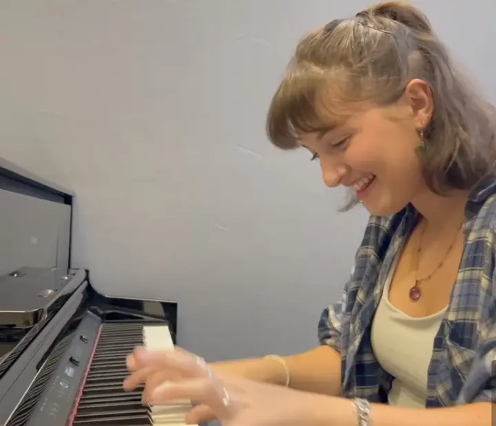

Actor-musician and artist
Emily Cruz
she/her
Emily is in the UK tour of Pride and Prejudice* *(sort of), as 1st cover for Effie, Flo and Tillie.
She trained on the BA (Hons) Actor-Musician course at Guildford School of Acting, 2023 to 2026, and is based in Greater London.
Credits
| Year | Production | Role | Director | Company |
|---|---|---|---|---|
| 2026 | Pride and Prejudice* *(sort of)Stage, UK tour | 1st Cover: Effie, Flo, Tillie | Isobel McArthur | David Pugh |
| 2026 | Vinegar TomStage | Musical Director/Ensemble | Amy Wallace | Guildford School of Acting |
| 2026 | Saturday NightMusical | Dino | Simon Hardwick | Guildford School of Acting |
| 2025 | The All New Adventures of Peter PanPantomime | Assistant MD | Will Kenning/Eoin Mallon | Evolution Productions |
| 2025 | I Should Be So LuckyWorkshop | Bonnie | Stuart Morley | ATG Productions |
| 2025 | Tom's Midnight GardenStage | Aunt Grace | Cressida Carré | Guildford School of Acting |
| 2025 | Into The WoodsMusical | Keys 2 | Owen White | Project Theatre Company |
| 2025 | She Loves MeMusical | Maraczek | Phyllida Crowley Smith | Guildford School of Acting |
| 2025 | Twelve Angry MenStage | Juror 3 | Anna Tringham | Guildford School of Acting |
| 2024 | CoriolanusStage | Sicinius | Chris Palmer | Guildford School of Acting |
Training
Guildford School of Acting, BA (Hons) Actor-Musician, 3 years, 2023 to 2026.
Showreels
Spotlight hosts these reels. Nothing is sent to Spotlight until you press play; then your browser loads Spotlight's player from mediaviewer.spotlight.com, which sees your IP address and may set its own cookies.
Instrumental reel
Gallery





From the showreels








Skills
Music
Dance
Accents and dialects
Languages
Performance
Other
- Playing age
- 15 to 25
- Height
- 5 ft 5 in (165 cm)
- Hair
- Light/mid brown, mid length
- Eyes
- Hazel
- Nationalities
- British, Portuguese
- Location
- Greater London
Representation
For casting and all enquiries, please contact Emily's agent.
GallowaysHenry Wood House, 4-5 Langham Place
London W1B 3DG
020 7631 3134 or 07752 705359
agents@gallowaysagency.com